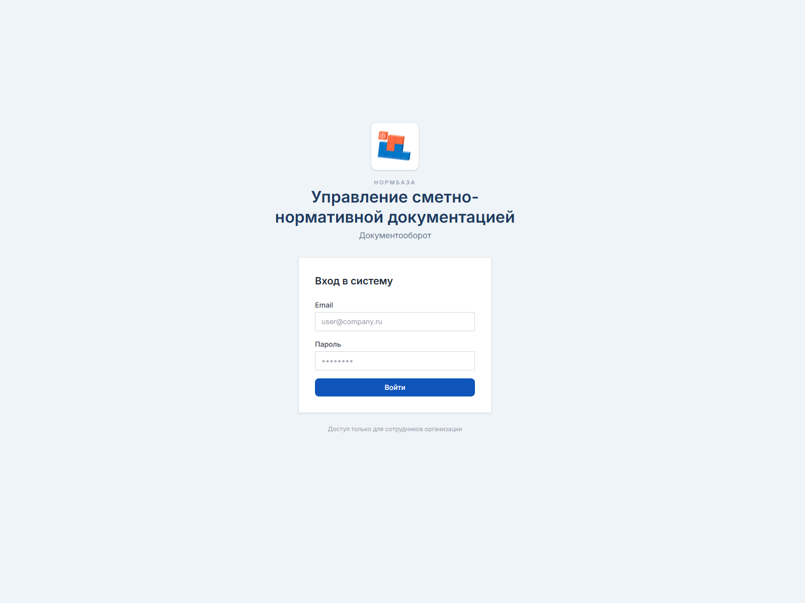

Прозрачный документооборот без потери контекста и ручного контроля.
NormBase Portal помогает выстроить понятный управленческий контур вокруг карточек,
ответственных, этапов проверки, результатов и рабочих комментариев. Вместо переписок,
разрозненных файлов и устных договорённостей компания получает единую среду, где видно,
что происходит, кто отвечает и где находится итоговый результат.
Для руководстваПоявляется прозрачность по загрузке команды, срокам, статусам и очередям.
Для командыИсчезает хаос из чатов, почты и устных согласований, всё собрано в одном месте.
Для компанииФормируется повторяемый процесс, который можно масштабировать на другие подразделения.
Как выглядит управляемый процесс
Меньше ручного контроля
126карточек в работе
18задач на проверке
96%действий с понятным статусом
Новое 4
NB-2026-0012
Поступил новый комплект материалов по проекту
ИсточникНужно назначить
В работе 7
NB-2026-0017
Подготовка рабочей версии файлов для обработки
ИсполнительСрок на этой неделе
NB-2026-0019
Актуализация сопроводительных данных по карточке
Приоритет
На проверке 3
NB-2026-0024
Результат готов и ожидает подтверждения проверяющим
Проверяющий
Готово 9
NB-2026-0007
Финальный результат сохранён и доступен команде
Готовый проект
Реальный интерфейс
Презентация опирается на живой продукт, а не только на абстрактные схемы.
Ниже встроены реальные элементы текущего решения: фирменный логотип, название продукта и фактический экран входа.
Это помогает показывать руководству не просто идею, а уже оформленную рабочую систему с узнаваемым визуальным образом.
Фирменный блок
Управление сметно-нормативной документацией
Документооборот для внутренних процессов компании. Логотип и нейминг уже встроены в продуктовый интерфейс,
поэтому система воспринимается как оформленное корпоративное решение.
Реальный экран

Экран входа выполнен в спокойном корпоративном стиле: пользователю сразу понятно назначение системы,
а визуальная подача выглядит аккуратно и современно. Для руководства это важный сигнал зрелости решения.
Что получает компания
Продукт переводит процесс из режима ручного контроля в управляемую систему.
Для бизнеса это не просто “ещё один портал”, а практичный инструмент, который делает работу с карточками,
проверкой, исходными материалами и результатами прозрачной, воспроизводимой и менее зависимой от отдельных людей.
Прозрачность статусов
Руководитель в любой момент видит, что только поступило, что уже взято в работу, что ожидает проверки и что завершено.
Персональная ответственность
Каждая карточка закреплена за конкретными участниками процесса, поэтому исчезает неопределённость “кто этим занимается”.
Единая точка входа
Карточка, ссылки, материалы, комментарии, история и результат находятся в одном месте, а не разбросаны по разным каналам.
Контроль сроков и очередей
Становится проще видеть просрочки, нагрузку команды и задачи, которые требуют управленческого внимания.
Сохранность результата
Готовые результаты не теряются и не остаются только в личных папках сотрудников, а становятся доступными для дальнейшей работы.
Снижение операционного шума
Меньше переписок, уточнений и ручных напоминаний, потому что система сама показывает следующий шаг и участников процесса.
Возможности
Не просто список задач, а единый рабочий контур для компании.
Решение помогает выстроить управляемый ритм работы вокруг карточек: от постановки задачи и загрузки материалов
до проверки, уведомлений, отчётности и финального хранения результата.
Ключевые возможности
Понятный жизненный цикл карточки: новая, в работе, на проверке, выполнена или отменена.
Удобное отображение в виде списка и канбан-доски для разных сценариев управления.
Комментарии, история действий и накопление контекста прямо внутри карточки.
Подписка на карточки и центр уведомлений без лишнего спама.
Отдельные обращения к администратору для нестандартных задач и запросов.
Отчёты по статусам, срокам и объёму работы за период.
Как это воспринимает пользователь
Мой кабинет
Показывает только то, что действительно требует внимания сотрудника прямо сейчас.
Все карточки
Даёт руководителю или координатору общую картину по потоку задач и их состоянию.
Уведомления
Собирают события в понятную ленту, чтобы не терялись изменения по нужным карточкам.
Готовые проекты
Позволяют быстро находить уже подготовленные результаты и использовать их повторно.
Обращения
Упорядочивают запросы к администратору и снимают хаос с точечными просьбами.
Отчёты
Помогают быстро увидеть, где есть узкие места, задержки или перегрузка.
Управленческий эффект
Руководство получает обзор процесса, а не набор разрозненных сигналов из разных каналов.
Операционная дисциплина
Сотрудники работают в понятной логике переходов и знают, что нужно сделать дальше.
Масштабируемость
Подход можно расширять на новые команды, процессы и категории задач без смены логики.
Снижение рисков
Контекст и материалы меньше зависят от личных переписок и памяти конкретного сотрудника.
Сценарий работы
Как выглядит рабочий путь карточки от поступления задачи до готового результата.
Важная ценность решения в том, что весь процесс становится читаемым и одинаково понятным для руководителя,
исполнителя и проверяющего. Это снимает большую часть организационных вопросов ещё до того, как они возникнут.
1. Постановка задачи
Создаётся карточка, фиксируется суть задачи, при необходимости прикладываются материалы и назначаются участники процесса.
2. Работа исполнителя
Исполнитель видит карточку у себя в кабинете, ведёт работу, загружает результат и накапливает рабочий контекст.
3. Проверка
Проверяющий получает уведомление, просматривает результат, подтверждает готовность или возвращает карточку в работу с комментарием.
4. Финал
После подтверждения результат становится частью общей базы знаний и доступен для дальнейшего использования командой.
Дополнительная ценность
Особенно полезные функции для управленческого и операционного контура.
Помимо базовой логики карточек, система закрывает целый ряд практических задач, которые обычно живут в письмах,
мессенджерах и “ручных” договорённостях. Именно это делает внедрение ощутимым для бизнеса уже в первые недели работы.
Что особенно ценно в ежедневной работе
Центр уведомлений позволяет не терять важные изменения по карточкам, на которые подписан пользователь.
Создатель карточки автоматически остаётся в контуре происходящего и не выпадает из процесса.
Проверяющий получает отдельный сигнал, когда карточка действительно готова к проверке.
Информационные карточки позволяют вести задачи, для которых не нужны исходные материалы или финальный результат.
Обращения к администратору превращают точечные просьбы пользователей в формализованный понятный поток.
История изменений и комментарии помогают быстро восстановить контекст и снизить зависимость от устных пояснений.
Лента внимания руководителя
Новая проверка
Система показывает, что по карточке требуется решение проверяющего, а не просто очередной просмотр.
Комментарий по задаче
Замечания и уточнения не теряются, а остаются внутри карточки как часть рабочей истории.
Обращение к администратору
Запросы на помощь, изменение или администрирование становятся видимыми и отслеживаемыми.
Уведомления без перегруза
События могут собираться в более спокойную ленту, чтобы информировать без эффекта спам-рассылки.
Внедрение
Практичный сценарий внедрения, который можно показать руководству без лишней сложности.
Лучший путь внедрения такого решения — не “большой запуск сразу на всё”, а аккуратный пилот на одном процессе или подразделении,
после которого система масштабируется на другие направления уже с понятными правилами и ожидаемым эффектом.
Рекомендуемый пилот
Выбрать одно подразделение или один тип задач, где особенно важны сроки, проверка и сохранность результата.
Согласовать роль участников: кто создаёт карточки, кто исполняет, кто проверяет, кто администрирует.
Запустить ограниченный набор сценариев и дать команде понятные правила работы внутри системы.
Через короткий период оценить эффект: прозрачность, скорость согласования, удобство контроля и качество хранения результата.
Что важно со стороны руководства
Поддержать единые правила работы и закрепить, что карточка становится основным рабочим объектом, а не “дополнительной формальностью”.
Что важно для команды
Дать понятный сценарий использования и показать, что система упрощает работу, а не добавляет лишнюю бюрократию.
Что получает бизнес
Управляемость, прозрачность, меньше потерь информации и более понятную точку контроля по срокам и ответственности.
Нюансы внедрения
Важно договориться о смысле статусов, правилах проверки, сроках реакции на обращения и общей дисциплине ведения карточек.
Итог
Почему это решение стоит рассматривать к внедрению уже сейчас.
Система закрывает понятную бизнес-боль: как организовать поток задач, проверку и результат так,
чтобы компания меньше зависела от ручных договорённостей и при этом не усложняла повседневную работу сотрудников.
Ключевые аргументы для руководства
Руководитель получает прозрачную картину по статусам и загрузке команды.
Задачи и результаты перестают жить только в чатах, письмах и локальных папках.
Проверка и ответственность становятся встроенной частью процесса, а не ручным контролем.
Готовые результаты сохраняются и могут использоваться повторно внутри компании.
Внедрение можно делать поэтапно, без тяжёлой организационной перестройки с первого дня.
Рекомендуемый следующий шаг
Показать решение на примере одного реального процесса, где есть поток задач, исполнитель,
проверяющий и ценность от сохранённого результата. Это позволит руководству увидеть не “систему как таковую”,
а конкретный управленческий эффект от её использования.